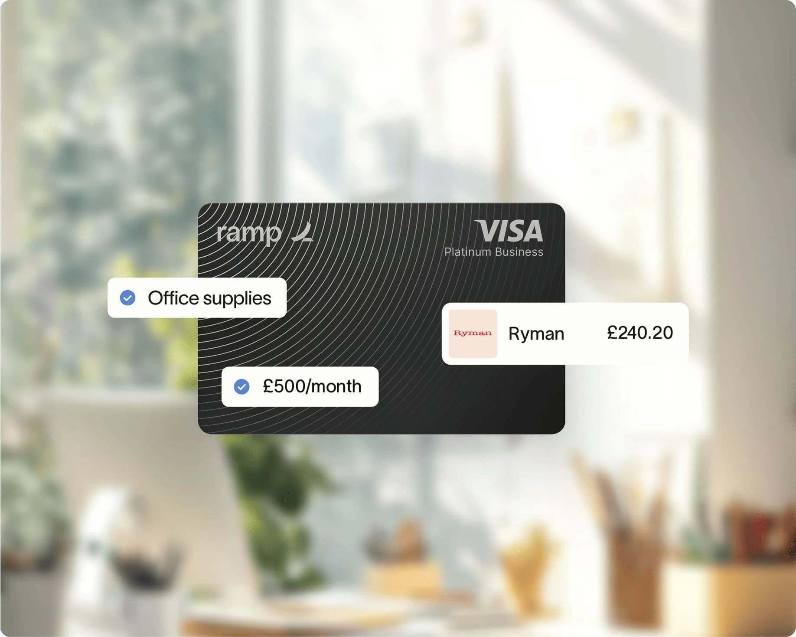
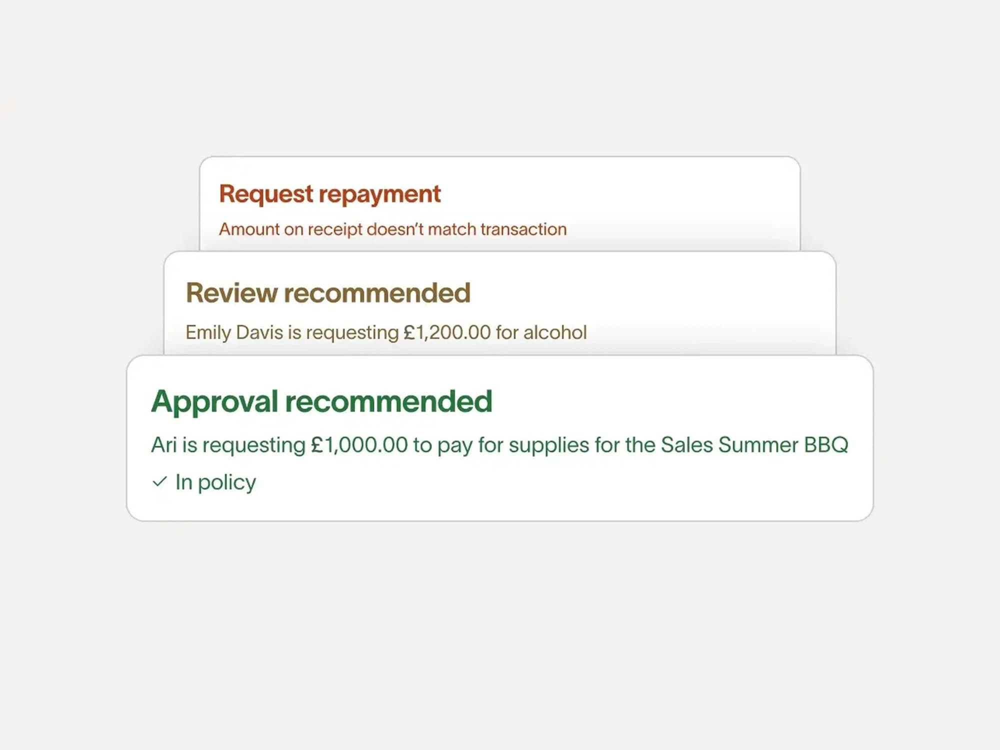
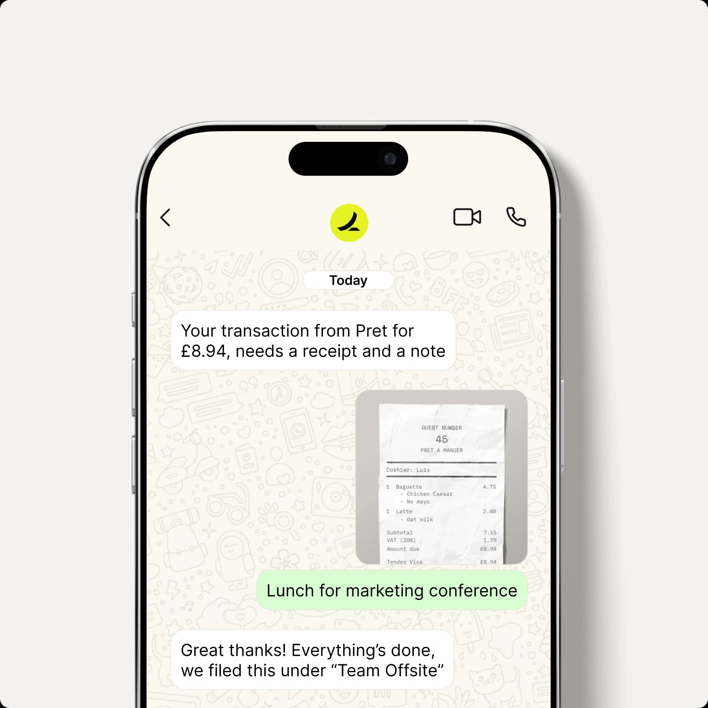

Researched example
CRM check needed
Solve Intelligence
Hiring its first dedicated finance lead in London to build approvals, procurement, spend and AP from scratch.
Next actionCheck customer status in CRM
Do it
Independent concept by Ayo Ahmed
A working desk for Ramp’s UK expansion. You enter public signs that a company is setting up or rebuilding its finance stack; the desk turns them into a source‑backed account brief from a fixed template, holds every draft for a person to review, and logs what the field learns for product and targeting.

Hiring its first dedicated finance lead in London to build approvals, procurement, spend and AP from scratch.
Each step keeps what we saw separate from what we think and what we still don’t know. Select a step to open it.
No CRM is connected to this desk. Look the company up yourself, then record what you found. Outreach stays locked until you do.
We look for company-posted evidence that a UK finance function is being set up or rebuilt. The researched example is a first dedicated finance hire, asked to choose the tools. Add your own public signal to build a brief the same way.
Known Ramp customers never become prospect tiles. Names appear here as text only, for audit.
| Company | Why excluded | Where we saw it |
|---|---|---|
| Fyxer | Known Ramp customer | UK launch post |
| ElevenLabs | Known Ramp customer | Customer story linked from the UK launch post |
The timing may suit a conversation about approvals, AP and connected accounting, while the stack is still being chosen.
Evidence first, then the hypothesis, the questions worth asking and what Ramp UK can honestly offer. The sample draft unlocks for copy or export only after review. There is no send button.

Everything below comes from one company-posted page, paraphrased. Nothing here is from a conversation.
Discovery questions for a first call. Tick up to three to include in the sample draft.
These look for a few risky phrases as you type. Passing them doesn’t make the draft accurate or compliant; a person still reads every line against the UK pages.
Structured questions for product, positioning and targeting, each with an owner and a decision. The seeded items are illustrative samples, not real conversations, and nobody has measured how often each comes up.
